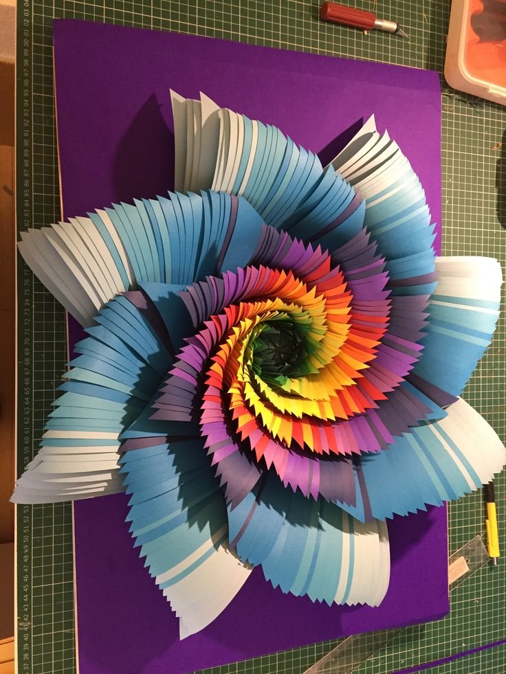

Karya seni nirmana 3D adalah bentuk eksplorasi seni rupa yang menekankan pada aspek visual dan estetik melalui penggunaan elemen-elemen tiga dimensi. Menurut jurnal-jurnal seni rupa, nirmana 3D bertujuan untuk menciptakan komposisi yang harmonis antara berbagai elemen seperti bentuk, ruang, tekstur, dan warna, yang dihadirkan dalam format tiga dimensi. Karya-karya ini sering kali menekankan prinsip-prinsip dasar desain, seperti keseimbangan, ritme, kesatuan, kontras, dan proporsi, yang semuanya berkontribusi pada pengalaman visual yang kaya dan dinamis bagi penikmatnya.
